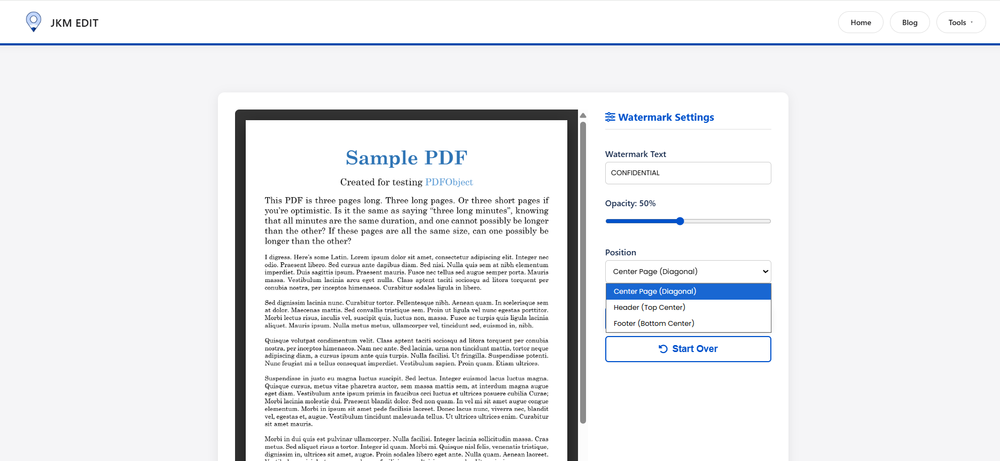
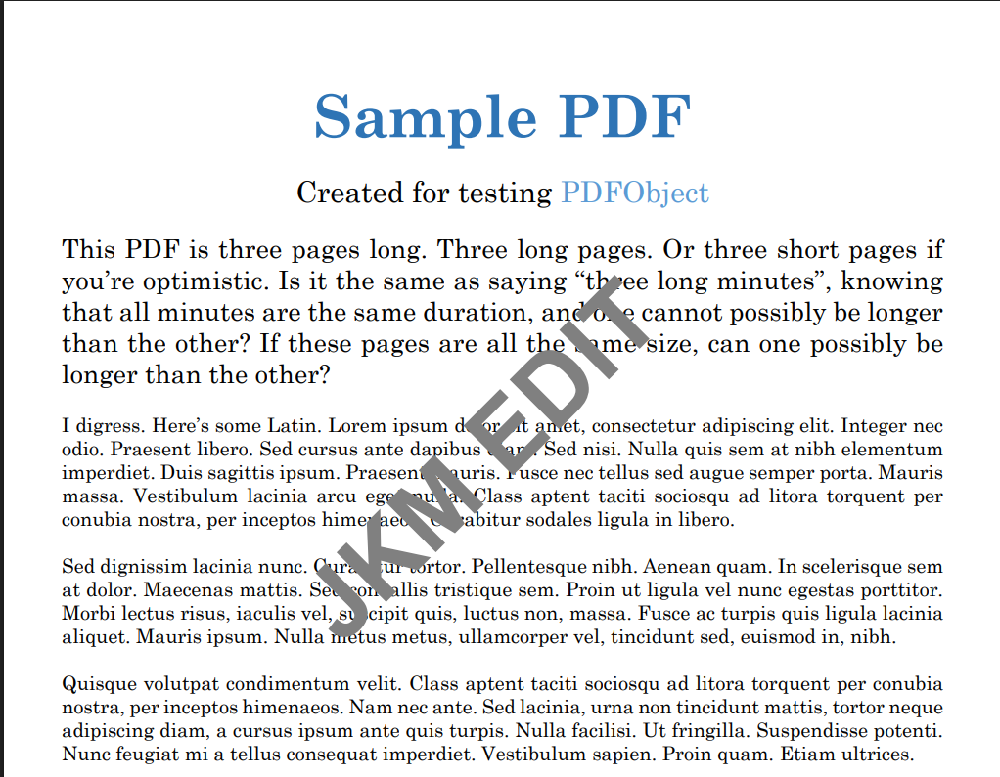

Add Watermark to PDF Files Online — Complete Guide for Protecting and Branding Documents
Protect your ownership, improve branding, and secure your documents instantly. Discover the fastest way to add text or image watermarks to your PDF files securely.

Introduction: Why Adding Watermark to PDFs Has Become Important
PDF files are widely used for sharing official, academic, and business documents. From contracts and invoices to reports and study materials, PDFs have become the standard format for secure and structured document sharing.
However, as digital document sharing increases, one major concern also increases:
Unauthorized copying, misuse, and lack of ownership identification.
For example:
- A business report shared with clients can be reused without credit
- A student’s notes can be copied and redistributed
- A designer’s portfolio can be downloaded and reused
- A company document can be forwarded without branding
This is where watermarking becomes extremely useful.
A watermark adds visible ownership or branding text/logo on PDF pages, making it clear who the document belongs to or whether it is confidential.
Instead of using complex design software, users can easily add a watermark using JKM Edit Home and its dedicated Add Watermark Tool. It is simple, fast, and fully browser-based.
What Is a Watermark in PDF?
A watermark is a semi-transparent text or image placed over a PDF document to indicate ownership, branding, confidentiality, or copyright protection.
Example uses:
- “CONFIDENTIAL” or "DRAFT" labels
- Company logo
- Author name
- Copyright text
Watermarks do not interfere with readability but clearly establish document identity.
Modern watermark tools allow users to add text watermarks, insert image watermarks, adjust transparency, control positioning, and apply them seamlessly across all pages.
Common Problems Without Watermarking
1. Document Misuse
Without watermark protection, documents can be copied, redistributed, or edited without permission by third parties.
2. Lack of Ownership
When documents are shared across multiple channels, recipients may not know the original author, company source, or ownership rights.
3. Weak Branding
Businesses lose valuable branding opportunities when reports, presentations, and PDFs are shared without identity marks or logos.
4. Academic Content Theft
Students and educators often face plagiarism issues, unauthorized sharing of premium notes, and copied assignments.
Why Adding Watermark Is Important
Document Protection
Watermarks actively discourage the unauthorized reuse and duplication of your content.
Branding and Identity
Businesses can reinforce their brand by adding their logo, company name, or website URL directly to the background of their official files.
Professional Appearance
Watermarked documents look significantly more official, structured, and professionally managed.
Copyright Protection
Creators can effectively protect designs, reports, premium study material, and digital content from being claimed by others.
Why People Prefer Online Watermark Tools
Traditional methods require expensive design software, manual editing, technical knowledge, and tedious installations.
Online tools eliminate these issues completely by offering instant access, browser-based editing, fast processing, and excellent mobile compatibility.
How JKM Edit Solves Watermarking Problems
1. Simple User Interface
The JKM Edit Add Watermark Tool is designed for beginners. Just upload your PDF, enter the watermark text or upload an image, apply, and download. No technical skills required.
2. Browser-Based Workflow
Works directly on desktop, laptop, Android, iPhone, and tablets. No software installation is needed.
3. Fast Processing
The watermark is generated and applied to all pages incredibly fast without delay.
4. Text and Image Watermarks
Users have the flexibility to add either a text watermark (e.g., CONFIDENTIAL) or an image watermark (like a brand logo).
5. Custom Position Control
Users can adjust the placement of the watermark—top, center, bottom, or diagonal positioning.
6. Free and Accessible
JKM Edit focuses entirely on simplicity, accessibility, and providing a seamless tool with no unnecessary restrictions.
Is Your Document Unprotected?
Stamp your authority and protect your content from unauthorized sharing instantly.
Add Watermark Now Free
Step-by-Step Guide: How to Add Watermark Using JKM Edit
Step 1 — Open the Tool
Visit the official secure link: JKM Edit Add Watermark Tool.
Step 2 — Upload PDF File
Select your document. This could be a report, assignment, business file, or certificate.

Step 3 — Add Watermark Text or Image
You can enter a company name, a label like “CONFIDENTIAL”, or upload your official logo image.
Step 4 — Customize Settings
Adjust the transparency so it doesn't block text. Change the position, size, and orientation (like diagonal) to fit your needs.
Step 5 — Apply Watermark
Click apply and let the system process your file rapidly across all pages.
Step 6 — Download Final PDF
Your watermarked PDF is ready instantly. Download and share it securely.

Watch Full Tutorial: How to Add Watermarks Using JKM Edit
Prefer a visual guide? Watch this quick step-by-step video tutorial demonstrating exactly how fast and seamless it is to protect your documents.
Real-Life Use Cases for Watermarking
Businesses
Essential for stamping company reports, client proposals, and highly sensitive internal documents.
Students & Educators
Perfect for branding premium study notes, ensuring assignment originality, and securing project reports.
Freelancers
Great for protecting portfolios, design drafts, and custom proposals sent to potential clients.
Legal and Government Use
Crucial for maintaining the integrity of confidential documents, official reports, and internal legal files.
Benefits of Using JKM Edit Instead of Traditional Software
| Feature | Traditional Software | JKM Edit |
|---|---|---|
| Installation Required | Yes | No |
| Ease of Use | Complex | Simple |
| Speed | Moderate | Fast & Instant |
| Mobile Support | Limited | Full Compatibility |
| Browser Access | No | Yes |
| Cost | Paid Tools | Free Access |
Privacy and Security in Watermark Tools
Users often upload sensitive files such as legal documents, financial reports, and personal certificates. JKM Edit uses browser-based processing to guarantee a smooth and entirely secure workflow experience.
Why Fast Watermarking Matters
Modern users expect instant editing, no delays, and a clean workflow. Slow or bloated desktop tools reduce productivity and efficiency.
Mobile Watermarking Is Increasing
Many users now need to add watermarks directly from smartphones for business files, study materials, and client documents on the go. JKM Edit fully supports this with comprehensive mobile compatibility.
Best Practices for Watermarking PDFs
- Use Semi-Transparent Text: Ensure the watermark is visible but doesn't distract from the main content.
- Avoid Blocking Important Content: Position the watermark carefully so charts or key text remain legible.
- Consistent Branding: Always use the same logo or font style for corporate documents.
- Keep It Simple: A clean, readable watermark looks much more professional than a cluttered one.
Future of Watermark Tools
Future improvements in online document processing may include AI-based watermark positioning, automatic branding detection, smart document protection systems, and seamless cloud-based workflows.
Frequently Asked Questions (FAQs)
Yes, using modern online tools like JKM Edit, you can add watermarks to your PDF documents completely free without hidden charges.
Absolutely. You can choose to add text (like 'CONFIDENTIAL' or your name) or upload an image (like a company logo) to brand your document.
No. You can easily adjust the transparency and positioning of the watermark so it establishes ownership without interfering with the document's readability.
Yes, the JKM Edit Add Watermark tool is fully responsive and works entirely in your mobile browser, requiring no app installation.
Yes, JKM Edit processes your documents securely directly through the web tool, prioritizing your privacy and ensuring your sensitive data remains safe.
Final Thoughts
Watermarking is essential for protecting ownership, improving branding, and maintaining document professionalism across digital channels.
Instead of using complicated or expensive software, users can easily protect their PDFs using the JKM Edit Add Watermark Tool.
With a fast, simple, and entirely browser-based system, JKM Edit makes document protection easy for everyone. Explore JKM Edit Home to streamline the rest of your digital workflow.
Take Control of Your Documents
Experience the easiest, fastest, and most secure way to brand and protect your PDFs. No installation required.
Add Watermark Now